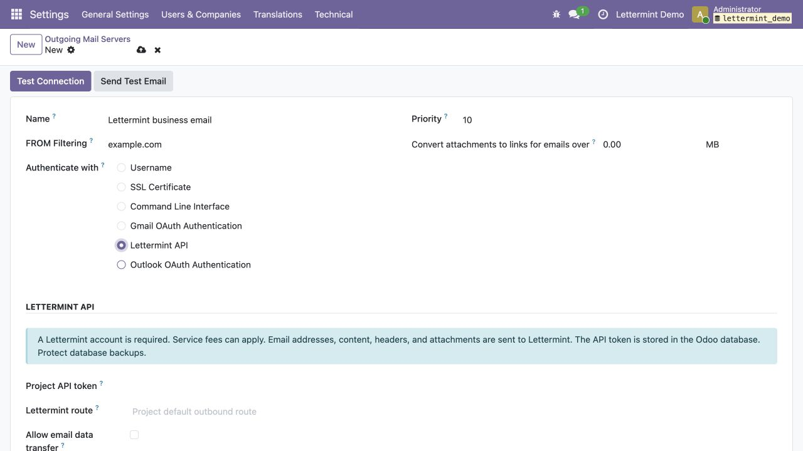

Keep Odoo tracking and unsubscribe links. Select a Lettermint route through an outgoing server.
Beta for Odoo Community 18 and 19. Free module. A Lettermint account is required; service fees can apply.
After administrator consent, sender and recipient addresses, message content, headers, and attachments are sent to Lettermint for email delivery.
Odoo Online requires SMTP setup and cannot install this Python module. Enterprise and Odoo.sh are not yet verified. Delivery and bounce events are not synchronized. API acceptance is not confirmed inbox delivery.
Use SMTP for emails with BCC recipients only, signed or encrypted emails, and other unsupported formats. See the included README for retry and message-size limits.
